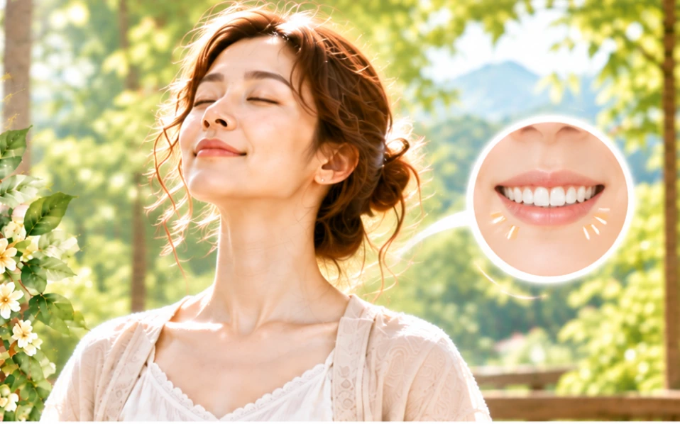

「叩天鐘」也有人稱之為「啄齒」、「叩齒」，就是將上下兩排牙齒互相叩擊，扣擊時力道的拿捏其實是因人而異，一般而言，牙齒健康的人則可以採取重叩或輕重交替叩的方式，而患有牙齒疾病的可能就不適合，或是等到牙齒好一點的時候再來進行。
叩的次數以三十六次為原則，有的古書記載是一百六十次，有的甚至是到三百次，其實在練習的時候，千萬不要受到次數的影響，秉持著「只做功夫，休管效驗」的心態去做就對了。
人的壽命與牙齒密切相關，人在步入老年之後就容易出現牙齒鬆動、民間有句諺語說：「朝暮叩齒三百六，七老八十牙不落」，就是說「叩齒」這個動作可以讓人牙齒堅固，這也是乾隆皇帝的養生秘訣之一，他是相當有名的長壽皇帝，在位總共六十年，享壽八十九歲，相較中國歷史上其它四百六十二個帝王，平均壽命都還不到四十歲，就會知道他的養生經驗非常值得參考。
乾隆在位時非常注重養生，他不吝嗇地將自己的養生之術告訴大臣，同時將它編成十六字的口訣以方便記憶「吐納肺腑，活動筋骨，適時進補，十常四勿。」
「吐納肺腑」指的就是吐固納新，據說乾隆每天黎明起床後，必定到戶外做深呼吸運動，藉以吐濁納清。
「強筋壯骨」乾隆不僅經常參加各種操練和狩獵，在位期間並曾多次安排出巡活動，史稱「乾隆下江南」，這樣不僅讓他可以充分活動四肢，又能夠藉機體察民情，久而久之身體自然更為強壯。
「適時進補」乾隆的進補主要是食補和藥補，是由御醫根據乾隆身體狀況及節氣特點所配。
「十常四勿」十常指的是「齒常叩，津常咽，耳常彈，鼻常揉，晴常轉，面常搓，足常摩，腹常旋，肢常伸，肛常提」，而四勿指的是「食勿言，臥勿語，飲勿醉，色勿迷」。
提肛也是乾隆皇帝最得意的養生功法，提肛運動就是有規律地往上提收肛門，然後放鬆，吸氣時持續提肛（如忍住大便），吐氣時肛門放鬆，一提一鬆為一次就是提肛運動。提肛是不費時間的運動，無論是等車還是看書，採用站、坐、臥等不同姿勢都可以進行，可以說是相當地簡單又實用。
今天是不是又學會一招了，別光只是看，記得也要試著做！
身安是福、心安即氣，身安心安、福氣自來。